避難シミュレータマニュアル
2015/2/13 産業技術総合研究所
本文書では一次元避難シミュレータの利用方法について説明します。本シミュレータは避難対象の構造物に関しての情報（構造物モデル）を入力するためのエディタと、実際の避難をシミュレーションするためのシミュレータの2つの部分から構成されます。
本文書では、まずシステムの起動方法や構成について説明した後、エディタを用いて構造物モデルの入力手順について説明します。次に、入力した構造物の情報を用いてシミュレーションを行う手順について説明します。
更新履歴
2014/12/04 松本
① 「RANDOMALL」,「LINER_GENERATE_AGENT_RATIO」の説明を更新
② エージェントの待機方法の説明を更新
③ シナリオファイルの説明を更新
2014/12/11 松本
① ミスプリを修正
② 使用方法が分からなかったため、暫定的にActionメニューの説明から”Calculate tag paths”、”Check for node in same position”、”Check reachability”を削除
③ エディタの”view”の説明を追加(”Show objects with scaling mode”、”Background group”、“Edit”→”Show groups”はまだです)。
④ ジェネレーションファイルの設定の説明の修正
2014/12/19 松本
① マップエディター上でのマウス操作を追加
2014/02/06 松本
① ADD_STOP、ADD_REMOVEの説明の追加
② 例10の追加
2014/02/13 松本
① Add Symlinkの説明を追加
② 一方通行の説明を修正
③ 例11、例12を追加
１．起動方法
必要な環境
人流シミュレータを起動するには以下の環境が必要となります：
· Javaの実行環境(J2SDK 1。6以上で動作を確認)
· Java3Dライブラリ(Java3D 1。5。2で動作を確認)
· Repastシミュレーションライブラリ(Repast3で確認)
起動方法
① Cygwinを開いてcdコマンドを使用してnetmasが入っているディレクトリまで移動する。
② sh quickstart.sh と入力しEntarを押すと起動する。
③ 最新版のCrowdWalkについては①を行った後 crowdwalk と入力してEnterを押すという方法でも起動できる。
サンプルについて
本マニュアルで解説している以下の例について、実際に動くサンプルがsampleフォルダに入っています。また、サンプルが用意されている例には”サンプル有”と書いてあります。
実際に動くサンプルがある例
・例1 ・例9 ・例10 ・例11 ・例12
はじめにP45から読んで、サンプルを使用してまず一度でもシミュレータを動かしてみると本マニュアルを読んだときに理解がしやすいかもしれません。
メインウィンドウの説明
人流シミュレータは大きく分けてエディタとシミュレーションの２つの機能があります。ここでは、その両方に共通するシミュレータの基本機能を説明します。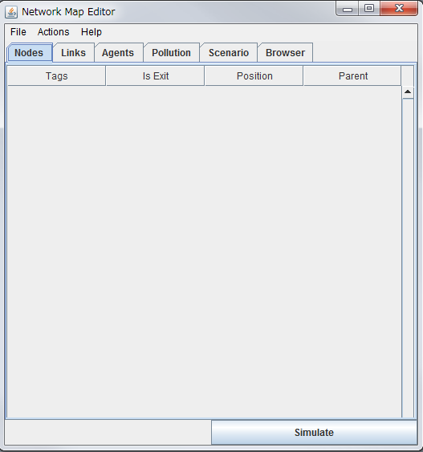
図 1 シミュレータの基本画面
シミュレータを起動すると、図１のようなシミュレータのメインウィンドウが出現します。各項目を簡単に説明します。
l Nodes
構造物モデルの端点であるノードの情報を表示します。行き止まり、交差点を表します。
l Links
構造物モデルに配置されたNodesを接続するリンクに関する情報を表示します。行き止まり、交差点などを繋いで、道や部屋を表現します。
l Agents
シミュレーション上の人（エージェント）に関する情報を表示します。シナリオと合わせて利用することになります。
l Pollution
汚染状況に関する設定、及び情報を表示します。
l Scenario
避難を行う際の人や汚染の進行状況などをシナリオとして表示します。
l Browser
シミュレーションを行う構造物モデルの階層構造を表示します。
次に、メインウィンドウのメニューバーについて説明します。
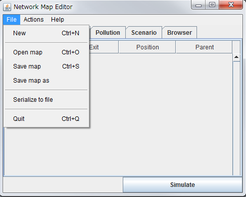
図 2 メニューバー
メインウィンドウのメニューバーには、”File”と”Action”という二つのメニューがあります。この項目は以下のような機能を表しています。
l ”File” メニュー
Ø ”File”→”New”
² 新規の構造物モデルデータを作成
Ø ”File”→”Open map”
² 既存の構造物モデルデータを開く
Ø ”File”→”Save map”
² 現在開いている構造物モデルデータに上書き保存
Ø “File”→”Save map as”
² 現在開いている構造物モデルデータを別のファイルに保存
Ø “File”→”Quit”
² 構造物モデルデータの編集を終了
l “Action” メニュー
Ø “Action”→”Show 3D”
² 構造物モデルデータを３D表示で確認
Ø “Action”→”Make stairs”
² 階段構造の作成
Ø “Action”→“Simulate”
² シミュレータの起動
２．エディタ
| 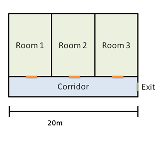 |
ここでは、チュートリアル形式でマップを作成する手順を説明していきます。
今回作成するマップを図３に示します。
図 3 シミュレーションを行う対象
シミュレーションのための構造物モデルデータを、このマップを基に作成していきます。後にこの図3をシミュレータに読み込む作業を行うので、あらかじめ上の図3を保存しておきましょう。
² フロア情報の設定
最初に、この構造物モデルの階層構造に関する情報を入力します。メインウィンドウの”Browser”から、作成する構造物モデルデータの階層に関する情報を入力していきます。
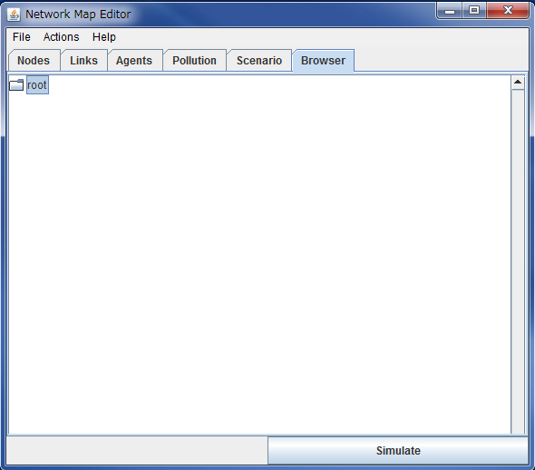
図 4 Browserでの階層構造の入力
（図４）左上のフォルダのアイコンを右クリックし、”Make Group”と入力すると、ダイアログが表示されます。このダイアログの”tag”と”height”フィールドに階層を入力します。ここでは、”1F”、階層の標準高さを0mとして入力し、OKボタンをクリックします。この操作で、左上のフォルダの下に”1F”という階層が作成されます。（図５）
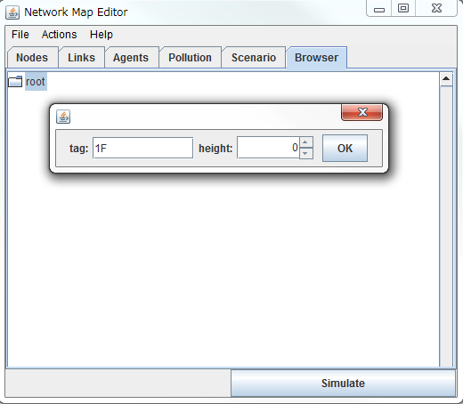
図 5 MakeGroupによる階層情報の設定
※注意：以下の図のように、フロアを作成した直後は作成されたフロアの隣にそのフロアのタグ(ここでは”F1”)が表示されません。作成されたフロアのフォルダアイコンをダブルクリックすることでエディタが表示されるとともにタグ名も表示されます。
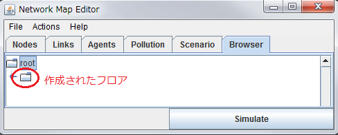
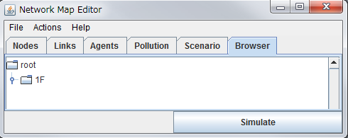
² 階層（フロア）をエディタで開く
① で作成した階層（以下フロアと表記します）を編集して、構造物モデルを作成していきます。”Browser”で”1F”と名前がついたフォルダを右クリックすると、”Show Frame”という項目があります。この”Show Frame”は、その階層を編集するエディタを開きます。（図６）また、”Browser”で”1F”と名前がついたフォルダをダブルクリックすることで開くこともできます。
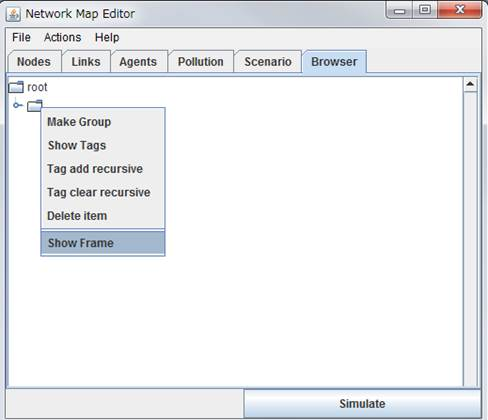
図 6 Browser の機能
このチュートリアルでは利用しない他の項目については、ここで簡単に説明しておきます。
l “Show Tags”
Ø このフロアに関連づけされたタグを表示します。タグにはシミュレーションで用いる情報や、エディタの機能が利用する情報ものも含まれます。
l “Tag add recursive”
Ø このフロアに含まれるノード、リンク、人（エージェント）などすべてにタグを追加します。
l “Tag clear recursive”
Ø このフロアに含まれるノード、リンク、人（エージェント）などのタグを削除します。タグにはシミュレーションで用いる情報や、エディタの機能が利用する情報ものも含まれるため、削除は注意して行ってください。
l “Delete item”
Ø 選択されたフロア、若しくはノードやリンクなどを削除します。フロアを削除すると、そのフロアに含まれるノードやリンクはすべて削除されますので注意してください。
² ノードやリンクの入力
エディタで表示したフロアに、ノードやリンクを入力していきます。まず、先ほど保存したマップを下敷き画像として読み込みます。エディタを選択し、”File”メニューから”Set Background file”を選択し、下敷き画像を読み込みます。
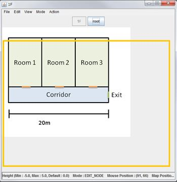
背景画像がセットされました(図７)。黄色の枠に画像がきれいに収まらないことがありますが、作業に支障は出ません。この背景画像は”Shift”+マウススクロールで拡大縮小できます。次に、交差点や行き止まりを表現するノードを入力していきます。ノードの入力は”Mode”→”Place Nodes”を選択することで初めて可能になります(図8)。希望の箇所をクリックすることでノードを設置することができます。もしメインウィンドウや他のアプリケーションにフォーカスが移ってしまったとき、この”Mode”は未選択になることがあります。その場合、再度”Mode”から選択する必要があります。
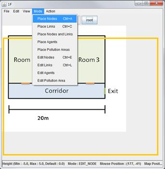
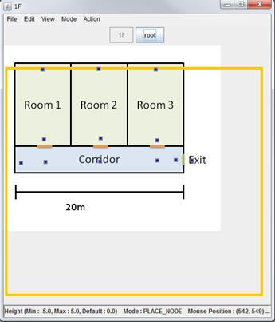
次に、このノードを繋ぐリンク（通路や部屋）を作成してきます。メニューバーの”Mode”→”Place Links”を選択してください。接続したいノードの一点をクリックすることで選択状態(赤色)にします。そうすると、他のノードに対してのリンクの候補が出現するようになります。このモードを使ってノードとノードを接続していきます。
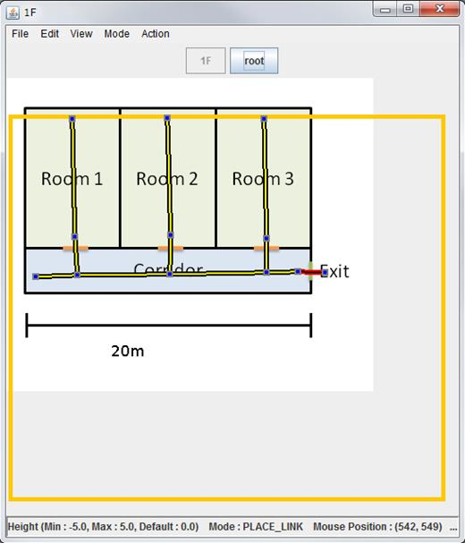
図 10 リンクを入力し終えた状態
² ノードやリンクの編集
シミュレーションを行うためには、縮尺を考慮する必要があります。シミュレータ内の距離はすべてメートルで表現されます。ただし、リンクの長さについては縮尺を後から変更できますので、相対的な値としてどんどん入力していくとよいでしょう。リンクの太さ（通路や部屋の横幅）については、一つ一つに入力が必要です。

図 11 リンクの属性変更
”Mode”→“Edit Links”でリンクを選択できる状態にし、リンクを選択して右クリックします。そうすると、7つのメニューが表示されます(図11)。
Ø ”Set link attribute”
² リンクの長さ、太さ、タグについて編集が行えます。
Ø ”Remove links”
² 選択したリンクを削除します。削除しても、端点のノードは残ったままになります。
Ø “Set One-way Positive”, ”Set One-way Negative”
² 一方通行を設定します。
² 一方通行になった箇所は以下の図12のように進行方向に矢印が表示されます。
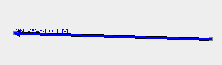
図 12
² 一方通行を設定するには以下の条件を満たしている必要があります。
· 閉じたリンクを含んでいないこと。
· リンクが分岐している箇所がないこと。
· すべてのリンクが途切れなく接続されていること。
Ø “Set Road Closed”
² 通行止め、つまり通ることのできないリンクを設定します。
Ø Remove One-way/Road Closed
² 設定した一方通行・封鎖を解除します。
Ø ”Add Symlink”
² 異なるフロアにそのリンクを表示したいときに、使用します。高さについてはあらかじめ考慮する必要がありますので、フロアの標準高さや階段の踊り場など、高さが必要な場合はノードの情報を変更します。
ここでは”Set link attribute”を選択し、図13のようにRoom1にあるリンクに”ROOM1”というタグを設定してみます。”add tag”に”ROOM1”と入力し、addをクリックします。さらに、この”ROOM1”という空間の大きさを設定してみます。図14のように”Length”に8、”Width”に6と入力しOKボタンをクリックします。
※注意：タグに使用するアルファベットはすべて大文字でなければなりません。また”add tag”と”link attributes”の設定は同時には行えません。
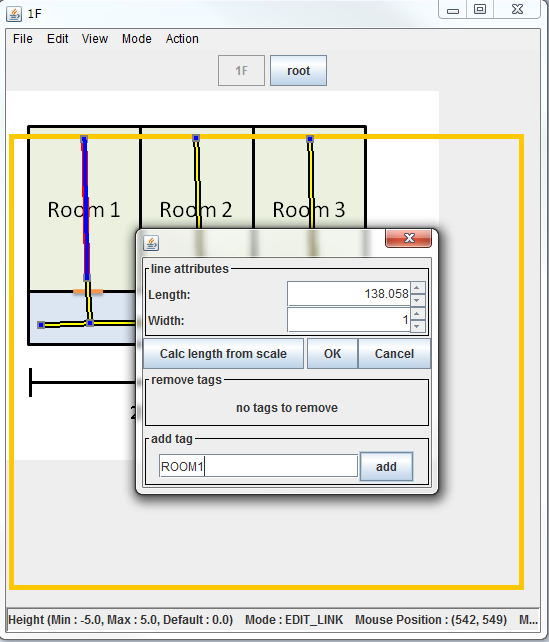
図 13 リンクにタグの指定
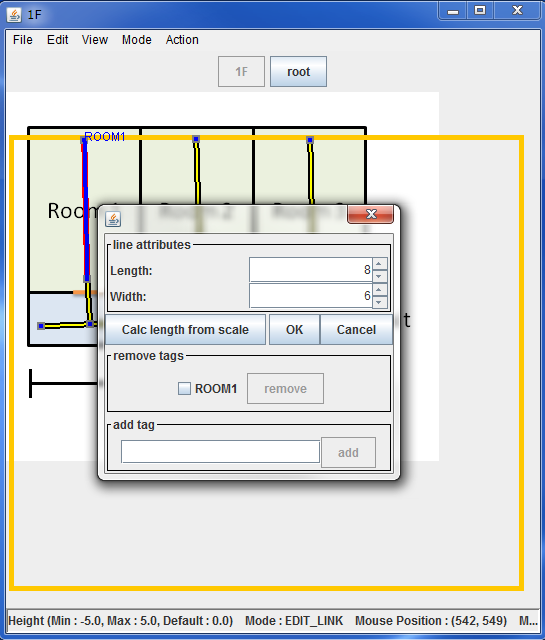
図 14 リンクの大きさの指定
また2階を作成し、”Add Symlink”を使用して1階のある部分の様子を2階に表示させてみます。先ほど1Fを作成した要領で以下の図15のように”2F”を作成してください。
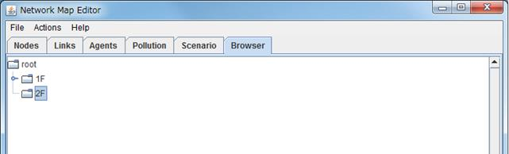
図 15
エディタで2Fを開きます。図15の2Fをダブルクリックします。すると図16のように初期状態のフロア(2階)が作成されていることがわかります。
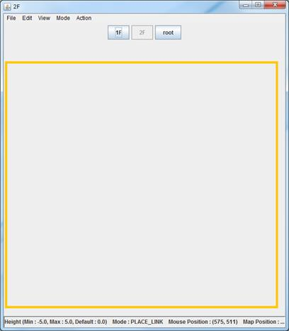
図 16 2階
次に2階に1階のROOM1を表示させてみます。図16の1Fボタンをクリックして1階を表示させてツールバーの”MODE”から”Edit Links”を選択し、ROOM1にあるリンクを選択し右クリックをします(図17)。

図 17
図17のように”Add Symlink”から”Simlink to 2F”を選択します。2Fボタンをクリックして2階の様子を確認してみます(図18)。
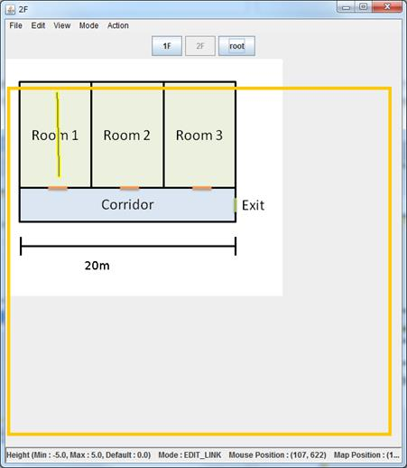
図 18 2階の様子
下敷きとともに選択したリンクが表示されました。ここでこのリンクは2Fではあくまでシンボリックですので、2Fでこのリンクを編集することはできません。
※ノードについても”Edit Nodes”を選択することで同様に異なるフロアに選択したノードを表示させることができます(図19)。
図 19
また、ノードについてもリンクと同じようにタグを設定することが出来ます。”Mode”→”Edit Nodes”を選択し、ノードを選択状態にしたのちに右クリックします。すると、図20のような画面が出現します。
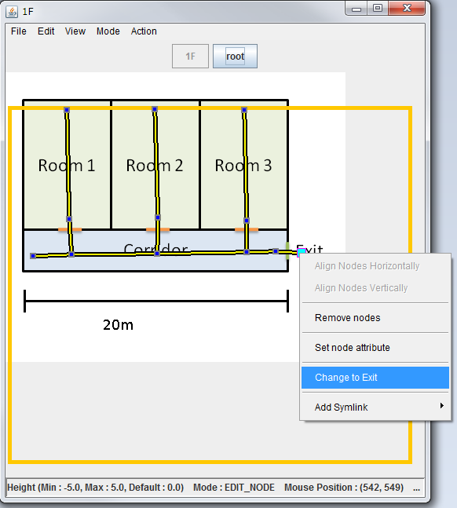
図 20 ノードの編集
Ø ”Set node attribute”
² この選択したノードにタグを付けることが出来ます。
Ø ”Remove nodes”
² 選択したノードを削除することができます(このとき、そのノードに接続されたリンクも削除されます）。
Ø ”Change to Exit”
² 選択したノードを出口に指定します。
² メインウィンドウでの確認
入力したデータは、メインウィンドウの各項目からもチェックすることが出来ます。例えば、図21で選択しているリンクは、ROOM1というタグがついた、8×6mの部屋で、１Fにあるということを示しています。

図 21 メインウィンドウとエディタの対応
またメインウィンドウからもリンクの長さや幅を変更することができます。例えばメインウィンドウにおいて”ROOM1”というタグがついたリンクの下のリンクの長さ、幅を変更してみましょう。図22のように操作をすることで変更ができます。
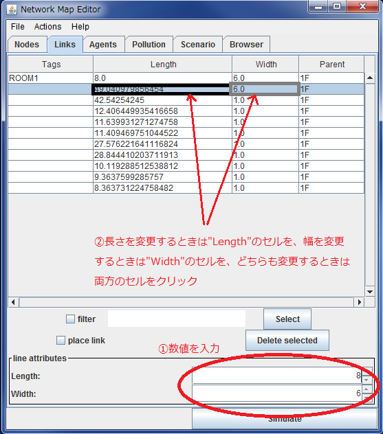
図 22 メインウィンドウからリンクの長さ・幅の変更
それではエディット画面との対応に注意しながら、図23のようにすべてのリンクの長さ・幅を変更してみましょう。
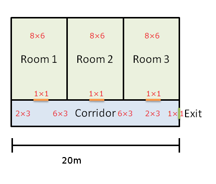
図 23 リンクの設定
² そのほかのエディタの機能
エディタが持つ便利な機能を紹介します (図24)。
Ø “Edit”→”Duplicate and move”
² “Mode”→”Edit Nodes”でノードを選択した後に実行すると、それらのノードと接続されたリンクすべてをコピーします。このときに、x、y方向にずらすことができます。
Ø “Edit”→”Duplicate floor”
² “Mode”→”Edit Nodes”でノードを選択した後に実行すると、それらのノードと接続されたリンクすべてを指定されたフロアにコピーします。
Ø “Edit”→”Move”
² “Mode”→”Edit Nodes”でノードを選択した後に実行すると、それらのノードと接続されたリンクすべてを移動します。
Ø “Edit”→”Rotate and Scale”
² “Mode”→”Edit Nodes”でノードを選択した後に実行すると、それらのノードと接続されたリンクすべてを回転・拡大縮小します。
Ø “Edit”→”Set Scale”
² エディタの縮尺を変更します。
Ø “Edit“→”Set background image scale”
² 背景の大きさを指定できます。
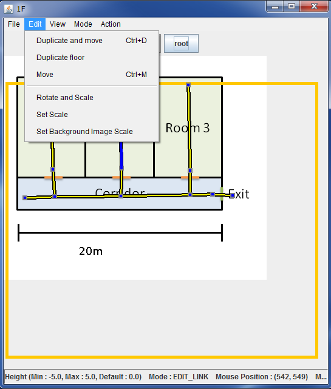
図 24 エディタのEdit機能
“View”はエディタの表示について変更が可能です。
Ø “Edit”→”Background”
² 背景の縮尺を変更できます。
Ø “Edit”→”Set link color”
² リンクの色を変更できます。
Ø “Edit”→”Centering”
² マップを中央に寄せます。
Ø “Edit”→”Centering with scaling”
² 画面の大きさに合わせてマップの大きさを変更し、中央に寄せます。
Ø “Edit”→”To the origin”
² マップをデフォルトの大きさに戻します。
Ø “Edit”→”Show nodes”
² ノードを表示します(デフォルトでは表示されるようになっています)。
Ø “Edit”→”(Show nodes labels)”
² ノードに割り振られているタグを表示します。
Ø “Edit”→”Show links”
² リンクを表示します(デフォルトでは表示されるようになっています)。
Ø “Edit”→”(Show link labels)”
² リンクに割り振られているタグを表示します。
Ø “Edit”→”Show agents”
² シミュレーション実行中にエージェントを表示します。
Ø “Edit”→”Show pollution area”
² シミュレーション実行中にポリューションエリアを表示します。
“Action”メニュー(図25)では、フロアの高さ調整を行う”Set height”を主に使用します。”Make lift”ではリフトを生成します。また”Make stairs”では異なるフロアとの階層構造を持たせることができます。
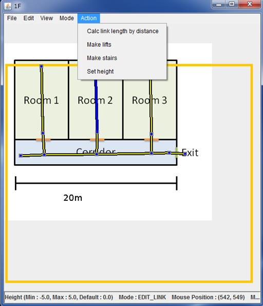
図 25 エディタのAction機能
実際にリフトと階段で1階と2階を繋げてみましょう。図26のように適当に2Fを編集します。
図25のように”Edit Nodes”で1Fの適当なノードを選択し、また2Fボタンをクリックして2階を表示させ、さきほど選択した1階のノードを繋げたい2階のノードを選択します。
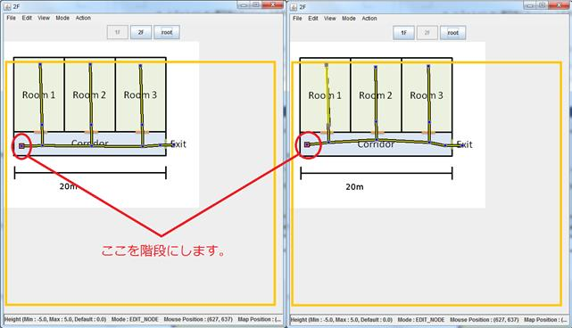
図 26
ツールバーの”Action”から”Make stairs”を選択します。これで選択した1階と2階のノードが階段でつながりました。
一連の作業で、構造物モデルのデータを作成することができました。メインウィンドウで、”Actions”→”Show 3D”と選択することで、この構造物モデルのデータを3次元で確認することも出来ます(図27)。
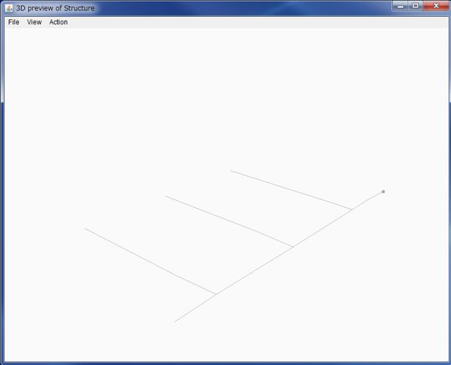
■マウス操作
Browser -> Map Editor
Scrolling ： 中央クリック + ドラッグ | SHIFT + 左クリック + ドラッグ
Zooming ： SHIFT + 右クリック + ドラッグ | ホイール
Localscrolling ： SHIFT + 中央クリック + ドラッグ | CTRL + SHIFT + 左クリック+ドラッグ
Localzooming ： CTRL + SHIFT + 右クリック + ドラッグ | SHIFT + ホイール
localRotate ： CTRL + SHIFT + ホイール
・Place Nodes and Links モード
ダブルクリックで始点ノード作成 -> マウスカーソル移動 -> 次のダブルクリックで終点ノードと共にリンク作成
３．シミュレータ
本節ではエディタで作成した構造物モデルを利用してシミュレーションを行うための方法について説明します。シミュレーションを行うためには上で作成したモデルの他に、エージェント発生シナリオ及び対処シナリオが必要となります。
シミュレーションの設定ファイル
ここではエージェント発生シナリオと対処シナリオを設定するためのファイルについて説明します。どちらもCSV形式(コンマ区切りのテキストファイル形式)で記述されています。なお、これらのファイルは先頭のセルが「#」から始まる行についてはコメントとして無視されます。
エージェント発生シナリオの設定ファイル
エージェント発生シナリオの設定ファイルではエージェントの挙動全般について記述します。このファイルの書式は次のようになっています：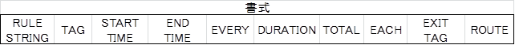
Ø RULE STRING
どのようにエージェントを発生させるか。以下の7つのうち、望む方法を指定する。詳しい挙動は後の例を参照。
² EACH：指定した時間内に発生させる。
² RANDOM：ランダムに発生させる。
² EACHRANDOM：各リンクにランダムに発生させる。
² STAFF：経由地点を通ってゴールまで案内をするナビゲーションスタッフを発生させる。
² RANDOMALL：ランダムに発生し、指定したタグをもつ経由地もランダムに選択する。
² TIMEEVERY：指定した時間ごとに発生させる。
² LINER_GENERATE_AGENT_RATIO：このタグを記述した以降の行に対して、指定した倍数だけ発生するエージェントの数を増やす。
Ø TAG
エージェントの発生場所。リンクにつけたタグを指定する。
Ø START TIME
エージェントが発生し始める時刻
Ø END TIME (RULE STRINGで”TIMEEVERY”を指定したときのみ設定をする。)
エージェントの発生が終了する時刻。
Ø EVERY (RULE STRINGで”TIMEEVERY”を指定したときのみ設定をする。)
指定した時刻毎にエージェントを発生させる。
Ø DURATION
エージェントの発生が行われる時間。指定したこの期間内にエージェントの発生が終了する。
Ø TOTAL
エージェントの総発生数
Ø EACH (RULE STRINGで” EACHRANDOM”を指定したときのみ設定する。)
それぞれのリンクに発生させるエージェントの最大値。
Ø EXIT TAG
発生させたエージェントの最終的な目的地。ノードにつけたタグを指定する。
Ø ROUTE
発生させたエージェントが最終的な目的地に行く際に経由する場所。ノードにつけたタグを指定する。経由地はカンマで区切って複数指定することができる。
l 例1 (サンプル有)
TIMEEVERY,LINK1,18:00:00,19:00:00,60,30,100,GOAL1
エージェント：全体で指定した数だけ発生
(実際の記述は”sample_gen_TIMEEVERY.csv”を参照)
18:00:00から19:00:00の間で、60秒毎に30秒をかけて100体のエージェントがLINK1上で発生し、GOAL1に向かいます。つまり、18:00:00に最初のエージェントが発生し、合計で100×61体のエージェントが発生します。そしてGOAL1に最短距離で進む。例えば、図28のようにLINK1というタグを3つのリンクに割り当てると、60秒毎に各LINK1上に合計で100 (33+33+34) 体のエージェントが発生します。
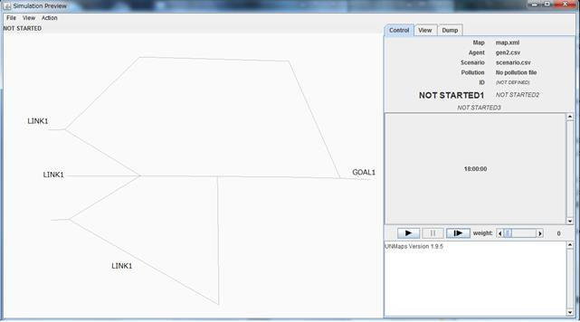
図 28 シミュレーション前
で1コマ送ると図20,21のようになる。
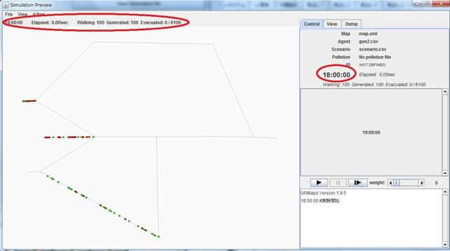
図 29 1コマ後のシミュレーション画面
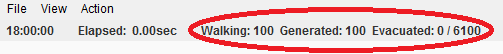
図 30 1コマ後のエージェント情報
18:00:00にLINK1上で100体のエージェントが発生している。
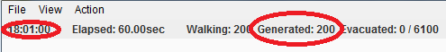
図 31 1分後のエージェント情報
60秒(1分)後に100体のエージェントが追加される。
l 例2
EACH,LINK1,18:00:00,60,100,GOAL1
エージェント：各リンクで指定した数だけ発生
(実際の記述は”sample_gen_EACH.csv”を参照)
18:00:00からの60秒(1分)間に発生を指定したすべてのエージェント(ここでは100体)が各LINK１上に発生し、GOAL1に向かいます。つまり、図19のようにLINK１という同じタグを3つのリンクに割り当てると、図32のようにそれぞれのLINK1からエージェントが発生し、合計で100×3=300体発生することになります。また、初期状態(18:00:00)を1秒と数えると、100(体)/61(秒)≒1.64(体/秒)なので、各LINK1において1秒あたり1~2体のエージェントが発生します。実際に図23をみると、初期状態で上から1番目のLINK1からは1体、2番目と3番目のLINK1からは2体のエージェントが発生しています。
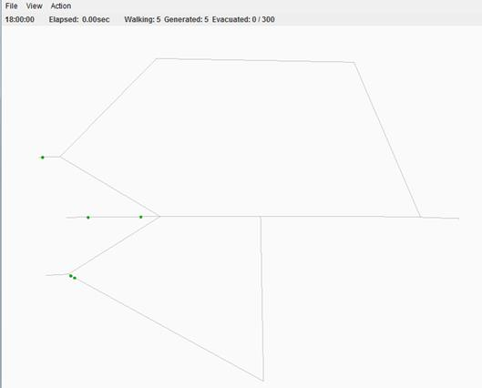
図 32 1コマ後のシミュレーション画面
l 例3
RANDOM,LINK1,18:00:00,10,1000,GOAL1,CHECKPOINT
エージェント：全体で指定した数だけ発生
(実際の記述は”sample_gen_RANDOM.csv”を参照)
1,000体のエージェントが18:00:00からの10秒間にLINK1上にランダムに発生し、CHECKPOINTを経由してGOAL1に向かいます。ここでは図33のようにCHECKPOINTを配置します。シミュレーションは1コマ進めると図34のように101体のエージェントが発生しました。2コマ目に進むと再び101体のエージェントが発生し(図35)、3コマ目に進むと98体のエージェントが発生します(図36)。このように、10秒間で1000体のエージェントが発生するように各LINK1にエージェントが発生し、各LINK1に発生するエージェント数はランダムに決定されます。
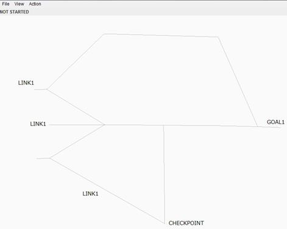
図 33 シミュレーション前
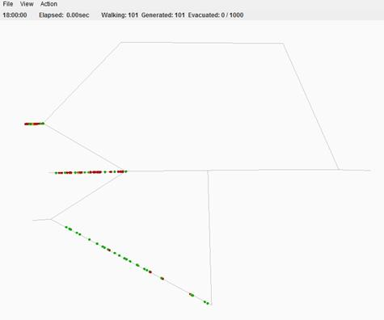
図 34 1コマ後のシミュレーション画面
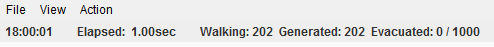
図 35 2コマ後のエージェント情報
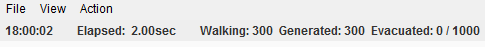
図 36 3コマ後のエージェント情報
l 例4
EACHRANDOM,LINK1,18:00:00,30,100,10,GOAL1
エージェント：各リンクに指定した数だけ発生
(実際の記述は”sample_gen_EACHRANDOM.csv”を参照)
最大で100体のエージェントが18:00:00からの30秒間にLINK1上にランダムな時間、ランダムな数発生し、GOAL1に向かいます。各リンク上に発生するエージェントの最大値はここでは10体と制限されます。図33の例ではLINK1は3つあるので、この例では全体で10×3=30体のエージェントが発生します。エージェントの発生の様子を示したものが図37~40です。
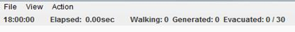
図 37 1コマ後のエージェント情報
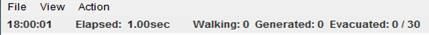
図 38 2コマ後のエージェント情報
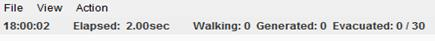
図 39 3コマ後のエージェント情報
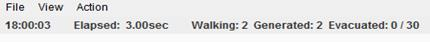
図 40 4コマ後のエージェント情報
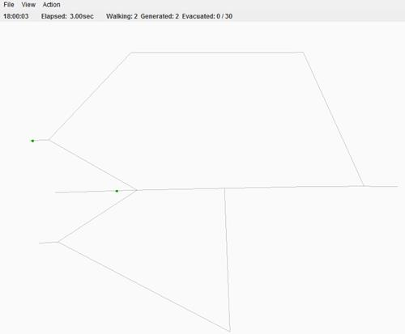
図 41 4コマ後のシミュレーション画面
l 例5
RANDOMALL,LINK1,18:00:00,10,1000,GOAL1,CHECKPOINT
(実際の記述は”sample_gen_RANDOMALL.csv”を参照)
1,000体のエージェントが18:00:00からの10秒間にLINK1上にランダムに発生し、ランダムにCHECKPOINTとGOAL1選択して、その選択したCHECKPOINTを経由してGOAL1に向かいます(ここではGOAL1、CHECKPOINTというタグを持つノードを複数設定する必要があります)。
※通常エージェントの発生場所は「リンク」を指定するが、このRANDOMALLは「ノード」を指定してもエージェントを発生させることができる。その際に複数のノードに「”ROOT-N”」というタグを複数の割り振ることで、「”ROOT-N”からエージェントを発生させ、ランダムに他の”ROOT-N”を選択し、選択したそこをゴールとしてエージェントを動かす」ことができるはずなのであるが、バグなのか”ROOT-N”で発生したエージェントはGOAL1へ向かってしまいます。そのためノードからエージェントを発生させることができる以外でルールタグの「RANDOM」との違いがない(みたいです)。しかし、現在ほとんどの場合でリンクからエージェントを発生させるようになっているので、ノードからエージェントを発生させる方法はあまり使用しない方が良く、また「RANDOMALL」の使用も注意する必要がある(かもしれません)。
l 例6
LINER_GENERATE_AGENT_RATIO,5.0
(実際の記述は”sample_gen_LINER_GENERATE_AGENT_RATIO.csv”を参照)
ここではこの記述以降の行(エージェントの発生ルール)に対して、指定した5倍の数のエージェントが発生します。発生するエージェント数を一括して変更したい際に便利なルールです。
例えばTIMEEVERYの説明をした例 1を使用すると、例1では合計で6100体のエージェントが発生していましたが、以下のように記述することで図42のように合計で6100×5体のエージェントが発生します。
Ø 例6-1
LINER_GENERATE_AGENT_RATIO,5.0
TIMEEVERY,LINK1,18:00:00,19:00:00,60,1,100,GOAL1
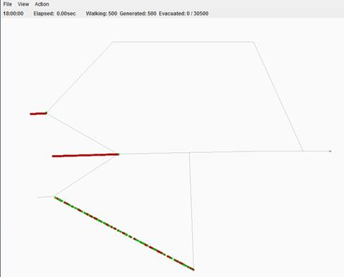
図 42
※この“LINER_GENERATE_AGENT_RATIO”は記述した以降のルールに適用されるので、例6-2のように書くと、この場合のTIMEEVERYのルールはLINER_GENERATE_AGENT_RATIOよりも上に記述されているので、このルールは適用されません。しかし、LINER_GENERATE_AGENT_RATIO以降に記述されているEACHのルールには適用されます。
Ø 例6-2
TIMEEVERY,LINK1,18:00:00,19:00:00,60,1,100,GOAL1
LINER_GENERATE_AGENT_RATIO,5.0
EACH,LINK1,18:00:00,60,100,GOAL1
例6-2の場合では、図43のように6100＋300×5体のエージェントが発生します。
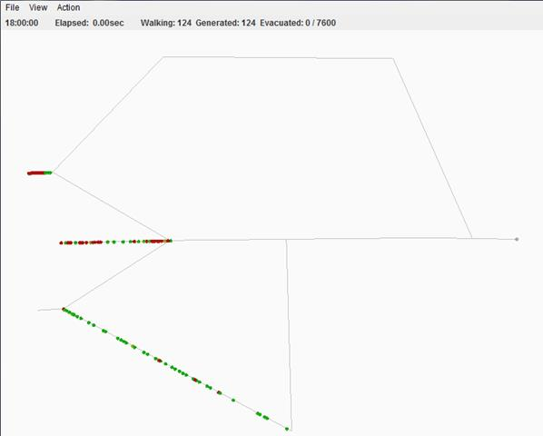
図 43
エージェントの待機
次に説明する対処シナリオと組み合わせるための書式です。エージェントを特定のリンクで待機させるため、現在２種類の書式が存在します。「WAIT_FOR」と「WAIT_UNTIL」です。待機方法には「SCATTER」と「PACK」があり、それぞれ「リンク内に散らばる」「前方に詰める」といった意味があります。またこれらは、後の例でみるように以下の書式に従って行の最後に記述します。
l WAIT_FOR
特定のリンクで一定の時間待機させます。書式は次のとおりで、単位は秒で指定します。
|
書式 |
WAIT_FOR(待機リンク |
待機方法 |
待機時間 ) |
|
例 |
WAIT_FOR(ROOM |
SCATTER |
600) |
Ø 例7
TIMEEVERY,START1,18:00:00,19:00:00,60,1,100,EXIT,WAIT_FOR(WAIT,SCATTER,600)
上記の例のように、行の最後に記述します。図44のようにリンクにWAITタグを割り振ると、WAITでエージェントが待機しているのが分かります。
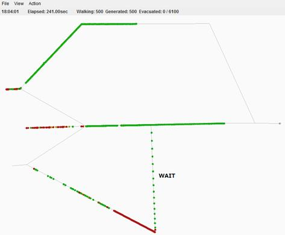
図 44
l WAIT_UNTIL
|
書式 |
WAIT_UNTIL(待機リンク |
待機方法 |
トリガー ) |
|
例 |
WAIT_UNTIL(ROOM |
PACK |
EVACUATE) |
WAIT_UNTILを使用した例は、次の対処シナリオの設定ファイルの説明と一緒に説明します(例9)。
対処シナリオの設定ファイル
対処シナリオの設定ファイルにはシミュレーションの開始時刻や災害発生時刻、その他対処に関する情報を記述します。1つの行に1つのイベントを記述する形式になっています。設定ファイルの書式は次のとおりです。
|
ID |
親イベント |
タグ |
命令 |
時間1 |
時間2 |
|
1 |
0 |
START |
|
7:30 |
|
|
2 |
1 |
ROOM |
SET:EVACUATE02 |
20 |
30 |
|
3 |
1 |
|
RESPONSE |
40 |
50 |
·
ID
イベントを識別するためのID
·
親イベント
このイベントが発生するための前提条件となるイベントのID。ここのIDが「0」のイベントは特殊な親イベントを持たないイベントとなります。
·
タグ・命令
このイベントの発生時刻となった場合に起こす行動(命令)と、行動の対象(タグ)を記述します。詳細については命令の一覧を参照して下さい。
·
時間1、時間2
イベントが発生する時間です。通常のイベントの場合には親イベントが発生してからの時間を分で記述します(相対指定)。親イベントを持たないイベントの場合には、時刻を「時：分」の形式で指定します(絶対指定)。
時間1と時間2の両方がある場合には時間2が利用されますが、バッチ処理の場合にはパラメータの与え方で、GUIでシミュレーションを実行している場合には操作パネルによって時間2を利用するように変更することも可能です。
命令とタグ
イベントの具体的な内容を指定するのは命令とタグです。命令とタグの組み合わせには数種類存在します。
· タグだけで機能するもの：START、OUTBREAK
o
START
シミュレーションの開始時刻を指定します。通常は親イベントのIDを0とし、時刻は絶対指定します。
o
OUTBREAK
災害発生の時刻を指定します。有害物質の拡散状況が登録されている場合には、OUTBREAKで指定された時刻が有害物質拡散の時刻0となります。
· 命令だけで機能するもの：RESPONSE
o
RESPONSE
シミュレーションの終了時刻を指定します。
· 命令で内容を、タグで対象を指定するもの：SET:、BOTH、EVACUATE、STOP
o
SET:
例2のように、命令は「SET:追加タグ名」という書式を用います。タグで指定されたリンク・ノードに対して追加タグ名を追加します。これは「エージェントの待機」にあった「WAIT_UNTIL」と組み合わせて利用することを想定しています。
o
EVACUATE
タグで指定されたリンク・ノードを避難モードにします。避難モードになっているリンクに入ったエージェントも避難モードとなり、最寄りの非常口(EXITタグで指定)へと向かいます。
o
STOP
タグで指定されたリンク・ノードを停止モードにします。停止モードになっているリンクからはエージェントが発生しなくなります。
o
BOTH
タグで指定されたリンク・ノードを避難モードと停止モードにします。
o ADD_STOP
指定した時間になると、タグで指定されたノードを通行止めにします。
o ADD_REMOVE
指定した時間になると、タグで指定されたノードのADD_STOPを解除します。
l 例8
1,0,START,,18:00,,
18:00:00にシミュレーションを開始するというシナリオ。非常に基本的なシナリオファイルの記述で、開始時刻は適時変更してもよいが必ず記述しなければなりません。
l 例9 (WAIT_UNTILを使用した例) (サンプル有)
・ジェネレーションファイルの記述
TIMEEVERY,START1,18:00:00,19:00:00,60,1,100,EXIT,WAIT_UNTIL(WAIT,PACK,EVACUATE)
・シナリオファイルの記述
1,0,START,,18:00,,
2,1,WAIT,SET:EVACUATE,10,,
18:00:00にシミュレーションを開始し、“WAIT”というタグが割り振られたリンクを通るエージェントは“PACK”という形態でWAITに18:10:00までの10分間待機するというシナリオ。このときシミュレーション画面は図45のようになります。WAITというリンクでエージェントが待機をしている様子がわかります。
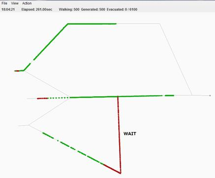
図 45
18:10:00になると、図46のようにエージェントが動き始めます。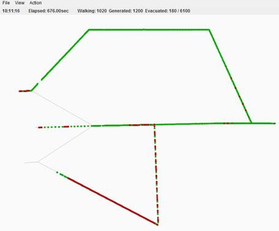
図 46
l 例10 (ADD_STOP、ADD_REMOVEを使用した例) (サンプル有)
・ジェネレーションファイルの記述
TIMEEVERY,START1,18:00:00,19:00:00,60,1,100,EXIT
・シナリオファイルの記述
1,0,START,,18:00:00,,
2,1,CHECKPOINT,ADD_STOP,18:10:00,,
3,1,CHECKPOINT,REMOVE_STOP,18:20:00,,
18:00:00にシミュレーションを開始し、18:10:00になるとCHECKPOINTが通行止めになり、18:20:00になるとその通行止めが解除されるというシナリオ。このときのシミュレーション画面は18:10:00になると図47のようになります。
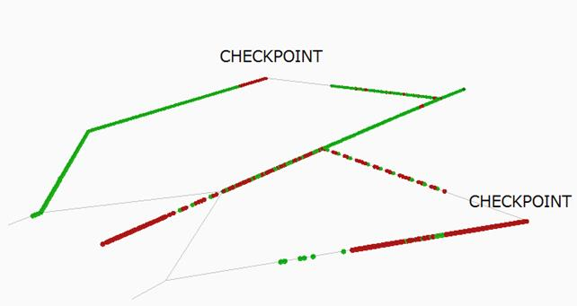
図 47
18:20:00になり、CHECKPOINTのADD_STOPが解除されると図48のようになります。
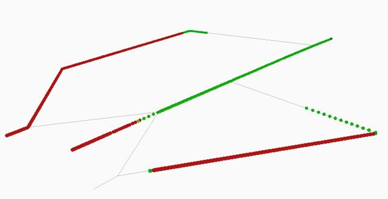
図 48
l 例11 (階層構造を持ったマップのシミュレーション) (サンプル有)
例9のマップに次の図49のような2階を付け加えます。また階段と出口(GOAL1)も設定します。
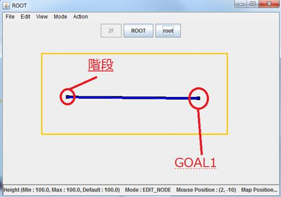
図 49 2階
また図50のように、”Edit Nodes” → ”Set node attribute” を行いノードの高さを設定します。ここでは100.0に設定しました。
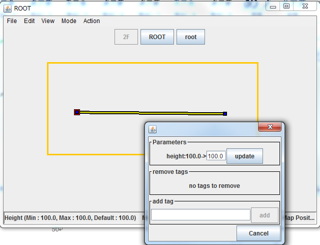
図 50
さらに図51のように、2Fのリンクの長さを50に設定します。
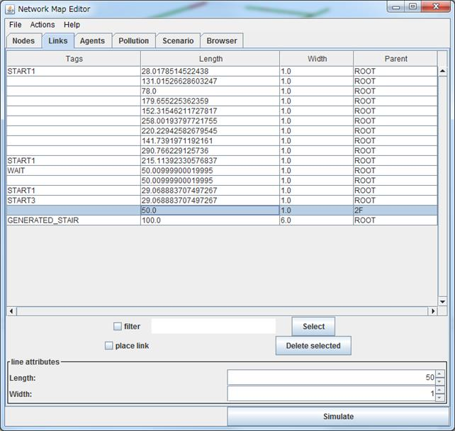
図 51
このときのシミュレーション画面は図52、53のようになります。
図 52
図 53
例12 (リフトを使った例) (サンプル有)
今まで使用してきたマップを以下のように変更します。
図 54
そして2階を作ります。この際にheightを必ず1階よりも大きな値にしてください。ここでは2階の高さを100に設定します。
図 55
1階のリフトを設置したいノードを”Edit nodes”で1つ選択します。そして”Action” → “Make lifts”を選択すると次の図56のような画面が出ます。
図 56
“New floors” の下にある2Fにチェックを入れると1階でリフトを設置するノードの位置と対応する2階の位置にリフトが設置されます(図57)。ここでチェックを入れなかった場合”Label” で指定されている”LIFT” というフロアが新たに作成されます。また”Existing floors” の下にあるCHECKPOINT が1階のリフトを設置するノードのことです。”Time (per floor)” はリフトで1階移動するのに要する時間で”Capacity per floor)”は1回あたりに乗ることのできる人数です。
図 57
設置されたリフトはノードですので、図58のようにリンクでつなげることができます。今回は図58のように出口を設定します。
図 58
シミュレーション画面は以下の図59、60のようになります。
図 59
図 60
マップファイルの設定
マップファイルはエディタのツールバーの「File → Open map」で設定することができます。
ジェネレーションファイルとシナリオファイルの設定
ジェネレーションファイルとシナリオファイルの設定はエディタの“Scenario”タブで行います。
ジェネレーションファイルは“Open Generation File”から、シナリオファイルは“Open Response File”からそれぞれ設定します。
図 61
図61の緑の枠内のように情報が表示されたら成功です。
これでシミュレーションを実行する準備が整いました。
シミュレーションの実行
次にシミュレーションを実行します。これは“Simulation”ボタンで起動します。
図 62
するとシミュレーション画面が表示されます。
※本マニュアルでは手動でマップファイル、ジェネレーションファイル、シナリオファイルを設定しました。しかしプロパティファイルというファイルにどのマップファイルやジェネレーションファイル等を使用するのかをあらかじめ設定しておくことでこのような手間を省くことができます。プロパティファイルの設定方法は”プロパティファイルの設定マニュアル(20xx.xx.xx 改正).docx”を参照してください。
シミュレーション画面の説明
シミュレーション画面の左側に表示されている3D Mapはマウスの右クリックを押したままマウスを動かすことで位置を変更することができます。またマウスの左クリックを押したままマウスを
動かすことでMapの向きを変更することができます。
シミュレーションのスピードを指定する(weightを大きくすると遅くなる)。 シミュレーションをコマ送りで実行する シミュレーションを 一時停止する シミュレーションを 開始する